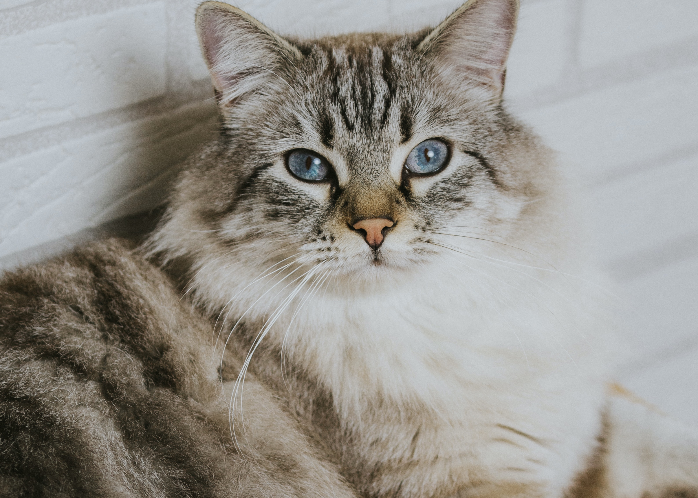
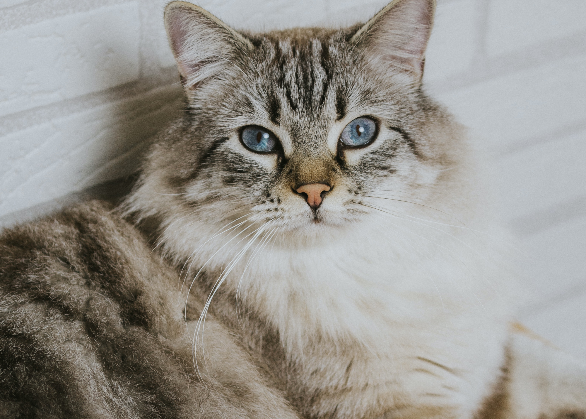

"We switched to Whisker after a bad experience with a regular groomer. Ever since we switched, we haven't had any problems! We aren't worried about our baby when we drop her off because we know she is in safe hands. Her coat has never looked better!" -Sandra White
Who We Are
We are a team of trained proffesionals that specialize in the grooming and care for felines. We started our company in 2001 after realizing that many groomers don't know how to properly groom cats. This would often lead to poor feline-groomer experiences, as well as sometimes harm befalling both groomers and felines. We believed that was avoidable and set out to find solutions. We are proud to say we have been successful. Click to learn more about our team members!
Learn More 

Getting Started
If you are wanting to have a positive worry free grooming experience for your cat, you've come to the right place! Your furry friend will need to be up to date on their vaccines, and we will need documentation. If they are up to date, you can call to schedule an appointment with us. If any accomodations are needed, have special requests or questions please let us know during this time. When you come for your appointment please bring the documentation and your furry friend in a carrier.
"We have to get our Maine Coon groomed regularly because he is prone to matting, especially at he has gotten older. We love the service that Whisker provides, and even Darth (our Maine Coon) loves it as well! His favorite part is the treat at the end. They are so gentle and caring with him. Thank you Whisker!" -Brian Cooper
Gallery